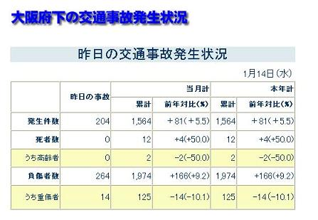
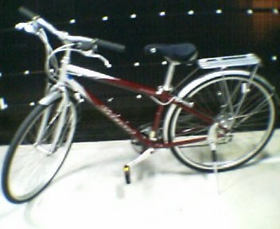

昔々、でも実はそんな昔じゃないつい最近、
川に石を取りにいこうとして、
タクシーにはねられた。
事故というものはニュースなどでは
その日時、場所、状況について客観的にしか説明されませんが、
この事故というもの、実に深い。
ましてや相手がタクシーという組織的存在であれば、
キキーッ！！ドーンッ！！
「痛ったー！」
「あーごめんごめん」
「もー気をつけてよ」
「ごめんね〜」
ブロロロロ・・・
こんな風に片付いたりしないのである。
いや、でも少なくとも片付けようとした、俺は。
日記の方にも載せたんですが、事故現場は、

大学のすぐ近く（しかも正門前）でしかも事故が起きたの午後３時。
知ってる人に見られてやしないか気が気でありませんでした。
そういう気持ちもあってすぐその場を離れたくなり、
俺をはねたタクシーの運ちゃんに、
「すいません」
って謝って行こうとしてた。
運ちゃん顔色変えて
「いいからこっち来て！」
そう連呼してた。
恥ずかしくてもうこの事故忘れたくなってた俺は内心 キレてた、
「なんだよ、人はねたくらいでビビってんじゃねーよ」
それから俺は運ちゃんが警察呼んで警官が到着するまで、
ずっと愛車のことを心配してた。
顔色真っ青な運ちゃんの、
「怪我はない？大丈夫？」
何度も問いかけてくるのを、
「大丈夫です、それよりチャリが・・」
数分前まで完全体だった愛車が、
ペダル回らない、タイヤ回らない、見るも無残な姿に。
それから少しして警官到着、
パトカーで来るのかと思ってたらカブで来た、
それから事故の状況を説明、
運ちゃんがやたらと俺が信号無視で勝手に飛び出したと主張。
警官が俺に確認とってきたから
「いえ、（信号は）見てないです」
正直に答えたのに、運ちゃん半ギレ、ちょっとむかついた。
仕方ないだろうが、信号見てなかったんだから 。
だからってそこらへんの信号無視とはわけが違う、
赤信号を無視したんじゃなくて、
信号の存在自体を無視したんだから。
それから俺に痛みはないかって聞いてきた。
「あ、大丈夫です」
「でも今興奮してて痛みを感じてないってことあるよ？大丈夫？」
「（ちょっと体を確認して）・・大丈夫だと思います」
「だからそれは興奮してるからかもしれないじゃない？」
「（もう一度体を確認して）・・大丈夫だと思います」
「だからそれは興奮・・」
・・・・
・・・・・・
・・・・・・・・
頭をよぎる強い思い、
じゃあ今その質問には答えられんだろーが！！
要するに病院で診てもらうかって意味だったらしい。
それならそうと言ってくれ。
早く終わらせたかったしほんとに体が大丈夫だったんで、
病院は行かなくていいってことにして、
事故も人身事故じゃなくて物損事故ってことで処理してもらった。
あとから知ったけど物損事故じゃ慰謝料とか取れないみたい、
それでとりあえずその場は終了で後日また改めて話し合うってことに。
こういう事故っていうのは警察は事故がありましたよっていうのを受理するだけで
解決は当事者同士でやるらしい。
それで後日の話し合い、そこで分かったこと。
運ちゃんが俺をはねた時顔色真っ青になってたって話したけど、
俺をはねた時タクシー50km出てたらしい。
そりゃ青くもなるわな。
それと愛車に夢中でちょっとしか見てなかったんですが、
タクシーのサイドミラー折れてたらしい。
愛車もガタガタになるほどだったのに、
なんで俺は無傷なんだろう？（後日病院にて異常なしを確認）
事故した場所もかなり交通量の多いところで
無傷ですんだのも
タクシー対チャリの事故だけですんだ（玉突き事故になりやすいらしい）のも
かなり運がよかったらしい。
というかこんなことで運を使ってどうすんだ、俺。
話し合いの時に初めて示談書なるものを見た。
| 示談書 上記事故につき当事者双方協議の結果・・・上記の・・・・・・・ 依って・・・本件について・・・以後如何なる事情が発生・・・・ ・・裁判上、裁判外意義請求の申し立てをしないことを確約・・・ |
・・・昼ドラの予感がした☆ドロドロした人間ドラマみたいな。
それと事故の瞬間って意識が飛んでる人ってけっこういたりしますが、
俺は意識飛んだりしませんでした。
だからって走馬灯が脳裏を駆け巡ったりもしませんでした。
信号が青だと思って横断する俺、迫り来るタクシー、
それに気付いた瞬間、
「おい待て待て！（信号赤なんて）聞いてない聞いてない！！」
突っ込みを入れてる自分がいた。
どこまで芸人魂が染み込んでんのかって思った。
それから友達と事故現場見て、あまりに速い車のスピードにこう思った、
「この流れの中に突っ込むなんてバカじゃねえの！？」
信号はよく見て渡りましょう。
ちなみに、

この一番上の項目、そのうちの一件は俺です。
毎日いろんなとこで事故は起きてるみたいです。
次の日自転車屋さんに自転車修理の見積もりをしてもらったら、
チャリ見て２分後くらいに、
「これね〜もう直りませんわ」
全損の通告を受けた。
普段の通学時はもちろん、
休日の遠出や帰省にも活躍してくれた愛車、
もう二度と直ることのない愛車、
ありがとう、愛車。

戻る